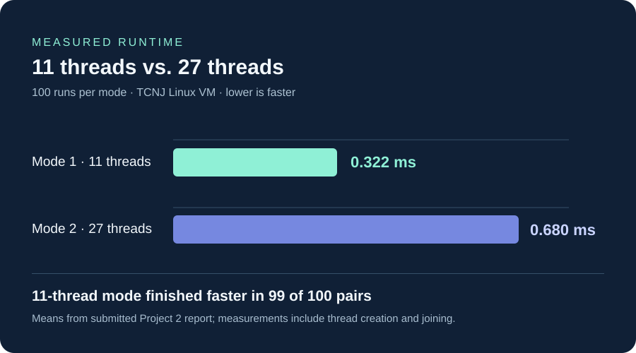

Overview
I worked with a class partner on a C program that validates a completed Sudoku board using POSIX threads. We designed and tested two configurations to compare different ways of dividing validation work.
What it does
- 11-thread mode: one thread checks all rows, one checks all columns, and nine check the 3×3 boxes.
- 27-thread mode: nine threads each check rows, nine check columns, and nine check boxes.
- Tested both correct Sudoku solutions and boards containing duplicate values.
- Measured wall-clock execution time using clock_gettime() with CLOCK_MONOTONIC to compare the configurations.
Measured results
Our submitted project report contains a paired experiment of 100 runs of each threading mode on the TCNJ Linux VM. Both modes validated the tested boards correctly.

Validation checks
The documented test runs produced SOLUTION: YES for a valid board and SOLUTION: NO for a board with a repeated number. In the timing experiment, the 27-thread configuration averaged about 2.11 times the runtime of the 11-thread configuration, consistent with extra threading overhead on a small task.
Technical experience
This project helped me work with creating and coordinating pthreads, splitting a validation task into independent checks, and reasoning about the overhead of multithreaded execution.